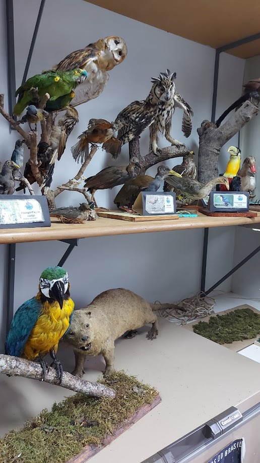
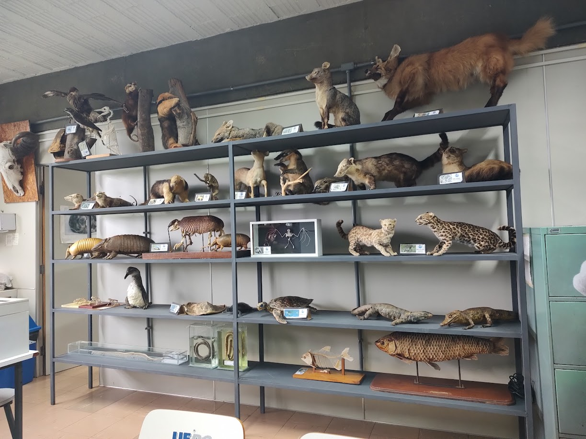
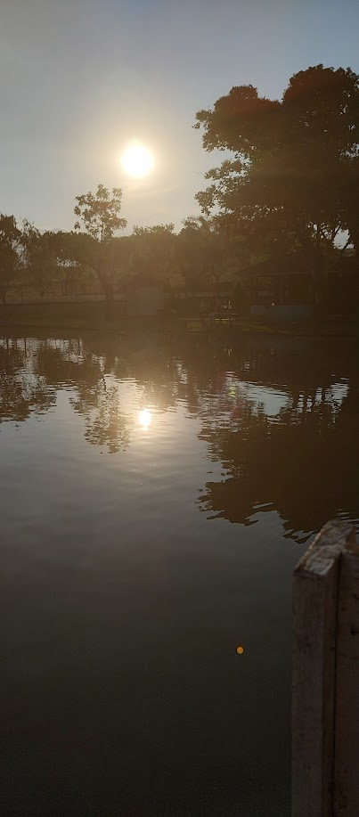

Fotos


Chifuyu Matsuno
Takashi Mitsuya
Ray


Norman
Emma
Toshiro Hitsugaya


Eu amo tirar fotos dos lugares aonde eu vou e onde eu visito, para mim as fotos são como um album de lembranças.
Quando eu vou rever minhas fotos me lembro do que ocorreu quando eu a tirei, sinto uma sensação de saudade e de felicidade ao memso tempo, eu amo
tirar fotos por esse motivo pois posso me recordar dos momentos bons depois.